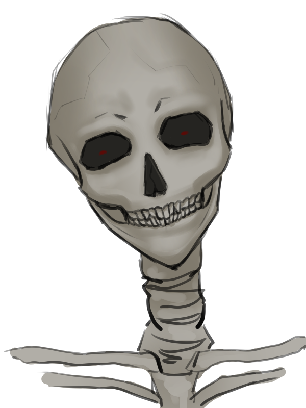

SUBJECT RECONSTRUCTION // PROGRESS: 0%
STAGE 0 // SKELETAL FRAME
SYNC: ACTIVE

DAILY PROTOCOL // HYGIENE & ROUTINE
+
SOMNOLOGY LOG // WEEKLY TELEMETRY
🌙 Ложусь спать
Среднее время сна за неделю:
0.0 ч
Ручная коррекция (сегодня):
7.5 ч
LAB TERMINAL // ZANDIK LIVE FEED
Показатели загружены. Посмотрим, насколько добросовестно ты соберешь себя сегодня.
Нажми на портрет для отклика
📤 Отправить отчет Дотторе в чат